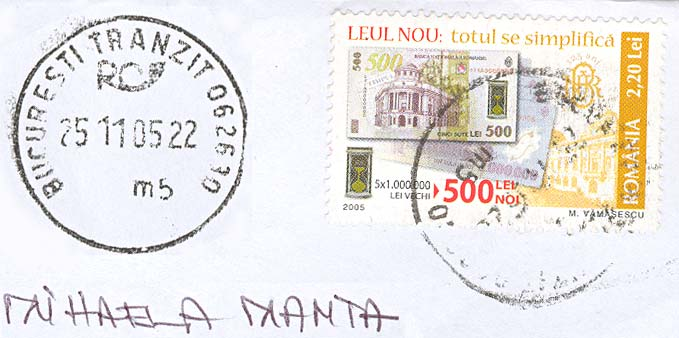
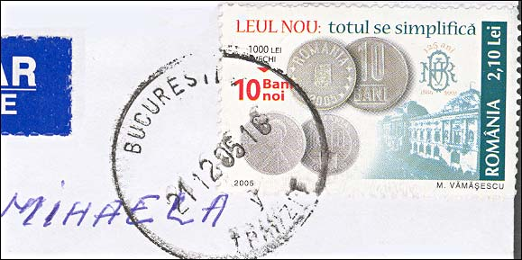
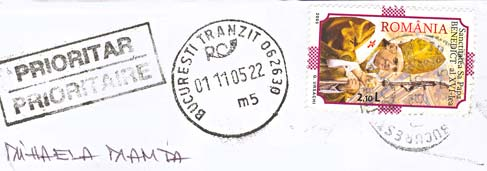
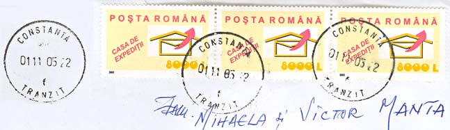
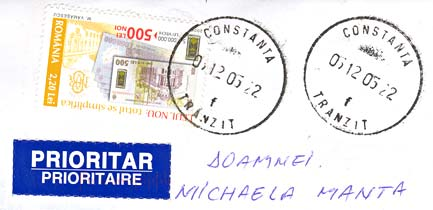
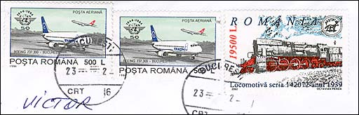
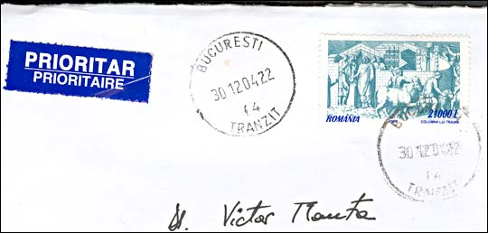
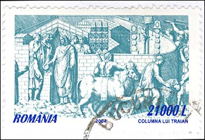
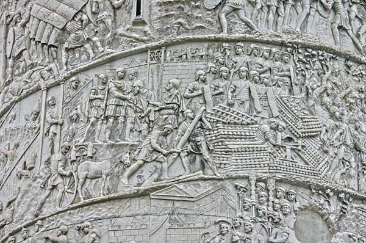
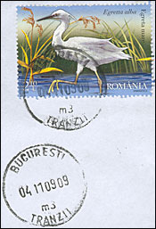

REDENOMINATION OF CURRENCY
Illustrated by December 2005 Covers, sent from RO to CH
Romania experienced a long and painful inflationary period. During the last years it slowed down and permitted the National Bank of Romania (that btw produced the inflation by printing large amounts of money) the redenomination of the currency.
"As of July 2005, Romania's legal tender, previously coded as ROL, has been redenominated so that ROL 10,000 are exchanged for 1 new leu (RON). The existing banknotes and coins, i.e. the old lei, shall be legal tender until end-December 2006. By 31 December 2006, the existing banknotes and coins, i.e. the old lei, are to be replaced gradually by the new banknotes and coins. Starting 1 January 2007, the exchange shall be made only at the NBR branches carrying out payments and at the offices of the credit institutions authorised by the NBR Governor's order to perform the exchange. There is no time limit for exchanging ROL notes and coins for RON notes and coins."
I show below how the redenomination is reflected by the Romanian stamps, that were postally used about 5 months after the start of the redenomination. Please note that I have moved to the top, and sometimes rotated the images of the cancels shown on the left of the images.

I begin with a letter sent on 11/25/2005 from Bucharest to Switzerland. The official tariff is, accordingly to the Romanian post, of 21,000 ROL or 2.1 RON. The above cover is obviously over franked with a 2.2 RON stamp. The stamp is interesting by itself, because it is dedicated to and explains the redenomination policy. On the top it is written: "NEW LEU: everything will be simplified". A new note of RON 500 is shown, superposed over an old one, of ROL 1,000,000. The bottom left image says that 5 x 1,000,000 old lei (ROL) are equivalent to 500 new lei (RON).

About a months later my family got another stamp from the same set, showing this time the conversion for coins. 1000 old LEI (ROL) = 10 new BANI (where 1 New Leu = 100 New Bani). This time the letter was franked correctly, with a stamp of 2.10 RON.
The BNR logo on the stamp means Banca Nationala a Romaniei. "125 ani" means "125 years". One can also read on the stamp, with some difficulty: 1880 - 2005.
Just to mention that till the end of 2006 the slogan "everything will be simplified" isn't really correct, for example because during 18 months all businesses have to accept payments in both currencies, which complicates a lot the processing.

The letter displayed above was sent on 11/01/05 from Bucharest to Switzerland. On the stamps, dedicated to the new Pope, one can read the value: 2.10L. This letter is franked correctly.

This letter was sent on the same day as the above one, on the 11/01/05. But it was sent from Constanta, the second large city of Romania after Bucharest. What a difference is makes!! First of all, three stamps in the old denomination are used (which is legit, but shows that the new ones haven't arrived yet or that the old ones have to be liquidated). The total value is of ROL 24,000, instead of ROL 21,000. And last but not least, the stamp collectors will of course quickly discover that the cancel on the right displays a wrong year (03 instead of 05).

The situation improved in Constanta (read as Constantza) about a month latter, as shown by the letter sent to Switzerland on 12/5/05. The stamp is in new lei but it's still of 2.20 instead of 2.10 RON. The letter took 5 days to arrive at the destination, which isn't bad at all, especially during this very busy period of the year.
Maybe you ask yourselves which means the last group of numbers on the cancels, and why it is always "22". It is the hour (22 meaning 10 PM), and it is the same because the postal authority obviously doesn't change it in the big processing centers.

For comparison purposes, I show above a letter sent from Bucharest to Switzerland two years ago, on 12/23/02. The total value of stamps is of ROL 20,500.

For the same reason please take a look at the letter sent from Bucuresti to Switzerland on 12/30/04. The fee was raised from 20,500 to 21,000 Lei. We see that the inflation continued, even if slowly when compared with the previous periods.

Historical note: Maybe Romania is the only country in the world whose name is linked with a town, the capital of an ancient empire. Indeed, the beginning of the Romanian nation is shown on Columna Traiana, that is located just in Rome. The history begins 19 centuries ago when the Romans, after two wars in which they have been lead by their emperor Trajan, have succeeded to conquest Dacia. This region, populated by Dacs, was annexed and then governed as a Roman province.

This is a picture of the Trajan Column that I have taken in March 2006, during my visit to Rome. By this occasion, I have learned that the scrolls, if they were put down on a plane surface, would cover the whole surface of two soccer fields.

In 2009, which means 4 years after, the price of franking hasn't chaged. Congratulations, the Romanian Post!
Links to inflation in Romania, on this site:
| Published:
12/10/2005. Revised: 11/06/09. Copyright © 2005 - 2009 by Victor Manta, Switzerland. All rights reserved worldwide. |